| ACTION
|
| Place
the main window to the right
of the screen and resize and place this window to the left. You should now be able to both
see the guided tour to the left and the RUP to the right. |
| ACTION |
| The ACTION column provides
you with instructions on what to do and with links to the RUP.
The links can be used to verify that you are at the right place in the
RUP. You will also be provided images that show how the tree browser should look like
at certain point in the guided tour. |
| Comment |
| The
Comment column provides you with more details on key concepts and
terminology that you need to understand. |
| ACTION |
| Click on the
Overview in the tree browser. 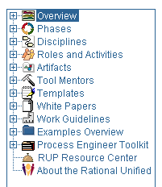
You
should be here |
| Comment |
| We
structure the process in two dimensions. The horizontal axis is
the Time Dimension. It shows how a project
progresses over time, describing phases, milestones, and iterations.
The vertical axis is the Content Dimension. It describes how Activities are grouped together in
what we call Disciplines. The RUP covers the full lifecycle and
has Disciplines for Business Modeling, Requirements, Analysis & Design,
Implementation, Test, Deployment, Project Management, and Configuration & Change
Management.
The Iteration Model graph shows how the emphasis on each Discipline varies
over time. In early Iterations, we spend more time on Requirements, and in
later Iterations we spend more time on for example Implementation. |
| ACTION
|
Expand Phases.
Expand and Select Inception 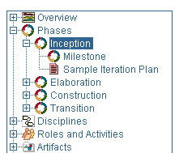
You should be here
|
| Comment |
| From
a management perspective, the software lifecycle of the RUP is
decomposed over time into four sequential phases, each concluded by a major milestone;
each phase is essentially a span of time between two major milestones. Milestone: Here you
can see the goal, what artifacts to produce, and the success criteria for the phase.
Sample Iteration Plan:
Here we describe how you typically will work in this phase. |
| ACTION
|
Expand Overview.
Select Key Concepts 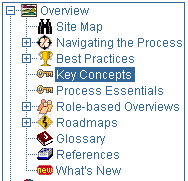
You
should be here
Click on any icon to read more. Use Back to come back to the graphic. |
| Comment |
| Let's
take a look at some key concepts we use to describe the process. A process should
describe Who is doing What and How. The RUP has
a key concept corresponding to each element of this question:
- Who is described by the concept of Role. A team member can typically
wear many hats, that is, take on multiple Roles. Several team members
may also take on the same Role
- What is described by the concept of Artifact, Examples of Artifacts
are Test Case, Business Plan, or Design Class.
- How to produce an Artifact is described by the concept of Activity.
RUP enhances team communication by providing all team members with
a common language and process. |
| ACTION
|
Click on the
Overview in the tree browser.
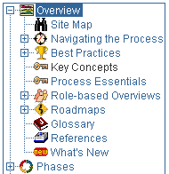 Click on the hot link Requirements
in the Iteration Model Graph.
You
should be here |
| Comment |
| Let's
take a look at the Requirements Discipline. In the Overview for
requirements, we see an activity diagram that shows what we do in requirements.
Analyze the Problem, Define the System, Manage the Scope of the System, Manage Changing
Requirements, and so forth. |
| ACTION
|
| Click on the hot
link Analyze the Problem. You should
now be here |
| Comment |
| Let's
take a look at Analyze the Problem. Here you see what roles are
involved—customers, end users, system analyst—the resulting artifacts and what activities to
do. We also have work guidelines with different techniques to find the problem. |
| ACTION
|
| Click on the hot
link Find Actors and Use Cases. You
should now be here |
| Comment |
| Let's
take a closer look at the Activity: Find Actors and Use
Cases. We can see the purpose of the Activity, and that it consists of a number of smaller
steps. We also see Input and Output Artifacts for the Activity. |
| ACTION
|
| Select Step Find
Use Cases. |
| Comment |
| When
you select a Step, you find detailed information on how to carry out the work. Let's
see what the process says about finding use cases. |
| ACTION
|
| Select the Up Arrow
to go to the top of the page At the bottom of the table, Tool Mentors:
Select Finding Actors and Use Cases Using Rational Rose.
You
should be here |
| Comment |
| The
RUP is written independent from tools. However, if you are using a
Rational tool, we provide guidance in how to use our tools to effectively carry out the
various Activities in the process. This guidance is called Tool Mentor. A
Tool Mentor provides you with very detailed guidance, describing what menus to pull
down, and what dialog boxes to fill in to carry out the various Activities. |
| ACTION
|
| Click on the button Where
am I on the top of the page. It should now look like this.
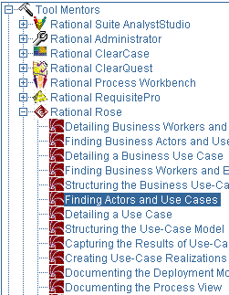
|
| Comment |
| As
you see in the Tree Browser, we provide Tool Mentors for Rational tools.
If you are using non-Rational tools, you can write your own Tool Mentor.
See the Process Engineer Toolkit for details. |
| ACTION
|
| Select and Expand Work
Guidelines 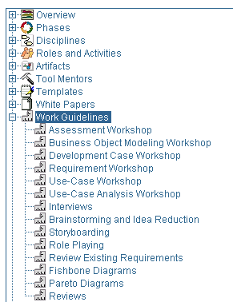
You
should now be here
|
| Comment |
| Here
you see an overview of all of the work guidelines we have, such as Use-Case Workshop, Assessment
Workshop, and so forth. You can expand any of the entries
in the tree browser on the left to find more detailed information on a topic of interest. |
| ACTION
|
Expand Roles
and Activities
Expand Managers
Select Project Manager in the list of the roles. 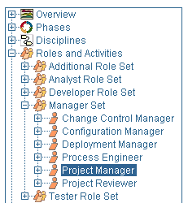
You
should be here
|
| Comment |
Now we have the focus on the Project
Manager and can see all artifacts that the Project Manager is responsible for and all
activities that guide the person to produce these artifacts. The activities are organized
regarding what to do at Project Start and at Iteration Start-End,
and so on. |
| ACTION
|
Expand Overview
Select Roadmaps You should be here
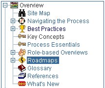
|
| Comment |
| Roadmaps
show how the RUP can be used for specific types of projects. We have roadmaps for:
- Small Projects
- Agile Practices in RUP
- Developing e-business Solutions
- Developing Component Solutions
- Evaluating Quality throughout the
Lifecycle
- Usability Engineering
|
| ACTION
|
| Select Developing
e-business Solutions You should be here |
| Comment |
| This
roadmap will jumpstart e-business projects on how to use RUP for
e-business development. The road map describe what characterizes a typical e-business
development project in each phase: inception, elaboration, construction, and
transition. |
| ACTION
|
| Expand and
Select Templates. 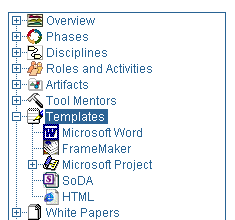
You should be
here |
| Comment |
| As
you see in the Tree Browser, we provide Templates for artifacts in Microsoft Word,
FrameMaker, and HTML format. We have three different Microsoft
Project templates for the phases Inception, Elaboration, and Construction.
You can also download FrameMaker templates from the Resource Center.
Reports for the RUP can be generated with Rational SoDA. SoDA has
12 reports for the RUP.
Rational RequisitePro has a project based on the RUP, with
templates for Vision, Glossary, Use-Case, and so on. |
| ACTION
|
| Open the
RationalProjectWebExample
from here. Select
Project Members.
Click on the link Project Manager.
See how the information on Project Manager comes up in the RUP
browser Window. Your project specific Web site has links to the
underlying knowledge base, the RUP.
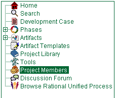
|
| Most
projects today have a Project Web Site, where all project artifacts and other project-specific information is stored. A template for that is part of the
RUP. The template has links to the process and placeholders for your project-specific
information. |
| ACTION
|
| The last part of
this tour is to look at the Search Engine and the Glossary. Note: The response times for these features are depending on the
speed on your Internet connection. This is not an issue when you are running the product
from your local machine or your Intranet.
Select the browser window with RUP.
Select Search on top of Right Pane.
Enter "Patterns".
Select Search.
|
| Comment |
| If
you are uncertain of how to find some information, you can always use the Search Engine.
Let's see what information we find on Patterns. |
| ACTION
|
| Double-click on
Concepts: Web Architecture Patterns. You should
be here |
| Comment |
| Here
we find information on various types of Web Architecture Patterns. The process
describes Thin Web Client, Thick Web Client, and
Web Delivery. |
| ACTION
|
Expand Overview
Select Glossary. Select "S". When you've finished looking at
the glossary, remember to close the Glossary window.
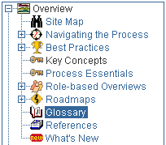 |
| Comment |
| To
facilitate communication, it's essential that everybody in the development team agrees
on a common vocabulary. The RUP comes with a Glossary
that defines and explains every important concept. |
| End
of Tour |
| You
now have an overview of the RUP and an idea of how easy it is to find
various types of information by navigating through the Tree Browser, Graphs, and
Search
Engine.
For an excellent introductory book
on the RUP, please refer to [KRU00].
Continue your familiarization with
RUP with the prerequisite reading.
|